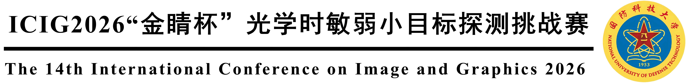

挑战赛的目的
1. 通过本次挑战赛促进科研技术的交流研讨和应用推广
本次挑战赛旨在依托 ICIG2026 学术会议平台，围绕光学时敏弱小目标探测中的关键问题，搭建面向学术界和产业界的开放竞赛与交流平台，吸引更多高校、科研院所和企业团队参与红外视频小目标检测、事件相机小目标检测等方向的研究。
2. 通过本次挑战赛促进光学时敏弱小目标探测技术发展
通过竞赛汇聚工业界和学术界的智慧与力量，促进相关算法、数据集和评价体系的共同发展，推动领域垂类大模型发展与应用，加速技术创新和产业推广。
挑战赛的意义
1. 光学时敏弱小目标探测应用广泛，关键技术问题突出
光学时敏弱小目标探测是智能视觉感知领域中的重要研究方向，也是复杂环境下目标探测与态势感知中的关键技术问题。弱小目标通常存在成像尺度小、目标能量弱、背景干扰强、目标形态不稳定等特点，单帧图像中可利用的信息十分有限。
2. 红外视频卫星目标检测亟需融合时域信息与轨迹关联
卫星视角下的红外视频弱小目标往往具有成像距离远、信噪比低、背景复杂、运动轨迹细弱等特点，仅依靠单帧检测难以获得稳定结果，需要进一步结合多帧时域信息、运动一致性和目标轨迹关联关系。
3. 事件相机小目标检测亟需发挥事件流时空连续性优势
事件相机能够以异步方式感知亮度变化，具有高时间分辨率、低延迟、高动态范围和低数据冗余等优势。面向事件点云和事件流的时空建模方法发展，对于提升复杂场景下运动小目标的检测能力具有重要意义。
4. 公开数据和统一评测标准有助于推动领域发展
红外视频卫星目标和事件相机小目标相关公开数据仍相对有限，真实场景数据获取和标注成本较高。本次竞赛通过开放具有针对性的数据资源和统一评测标准，为参赛队伍提供公平、可复现的算法验证平台。
任务设置
赛道一：红外视频卫星空中动目标检测
赛道一的主要任务是对视频中的红外小目标的质心进行预测，附加任务是对目标进行跟踪。参赛队伍根据红外小目标图像特点自行设计相关算法，使用主办方提供的数据集进行模型训练，最终以召回率（Recall）、精确率（Precision）和 F1 分数作为评价指标，以及轨迹完整度和轨迹准确度作为附加评价指标，衡量参赛队伍算法模型的性能。
赛道二：基于事件相机的运动小目标检测
赛道二的主要任务是对事件流中的目标事件进行逐事件分割。参赛队伍根据事件小目标特性自行设计相关算法，使用主办方提供的事件数据集进行模型训练，最终以交并比（IoU）、准确率（ACC）、检测率（Pd）和虚警率（Fa）作为主要评价指标，衡量参赛队伍算法模型的性能。
数据集简介
赛道一数据集简介：待补充
赛道二数据集简介：待补充
数据集图片与样例展示：待补充
挑战赛评价方式
赛道一评价方式
本次挑战赛赛道一的算法评价指标为召回率（Recall）和精确率（Precision），附加评价指标为轨迹完整度、轨迹准确度。算法最终评分结果由 F1 分数和附加分数组成。
| 附加得分项 | 阈值一 | 阈值二 | 阈值三 |
|---|---|---|---|
| 轨迹完整度得分 | ≥25%：+2分 | ≥35%：+3分 | ≥50%：+5分 |
| 轨迹准确度得分 | ≥55%：+2分 | ≥65%：+3分 | ≥80%：+5分 |
最终得分为 F1 分数 × 100 + 附加得分，满分为 110 分。
赛道二评价方式
赛道二的算法评价指标为交并比（IoU）、准确率（Acc）、检测率（Pd）和虚警率（Fa），最终评分结果由各指标加权得分。
硬件与系统资源
| CPU | 待补充 |
| GPU | 待补充 |
| 内存 | 待补充 |
| 操作系统 | 待补充 |
结果提交方式
结果提交格式、提交入口和提交次数限制：待补充
参赛队伍需在规定时间内提交测试结果，并在后续阶段提交算法代码、模型文件及算法报告。组委会将对各参赛队进行真实性审查。
为了避免参赛队伍滥用其他数据集或验证集标签信息用于算法训练，参赛队伍需提供算法训练时的相关参数，要求算法结果可复现。如发现违规使用数据信息或算法结果无法复现，组委会将按赛事规则处理。
专题研讨会
专题研讨会安排：待补充
知识产权归属
参赛队伍提交的算法及可执行模型的知识产权归参赛团队所有，比赛数据集归主办方所有。
各参赛队伍需要承诺提交的结果可重复，组织方承诺履行保密义务，并不用于除本挑战赛外的任何其他用途。
参赛队伍应保证所提供的方案、算法属于自有知识产权。组织方对参赛队伍因使用本队提供完成的算法和结果而产生的任何实际侵权或者被任何第三方指控侵权概不负责。一旦上述情况和事件发生，参赛队伍必须承担一切相关法律责任和经济赔偿责任并保护组织方免于承担该等责任。